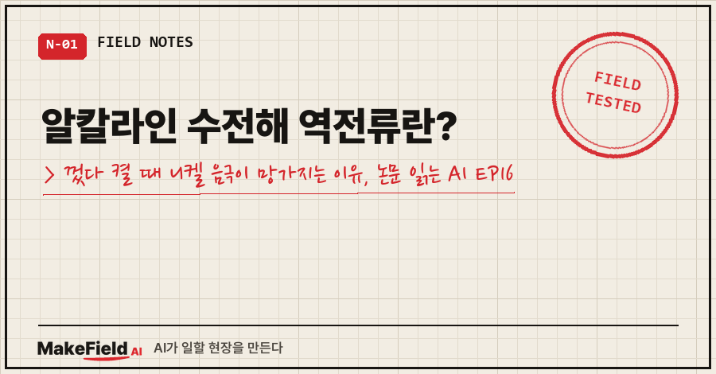
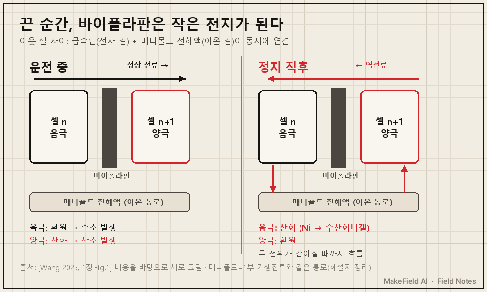
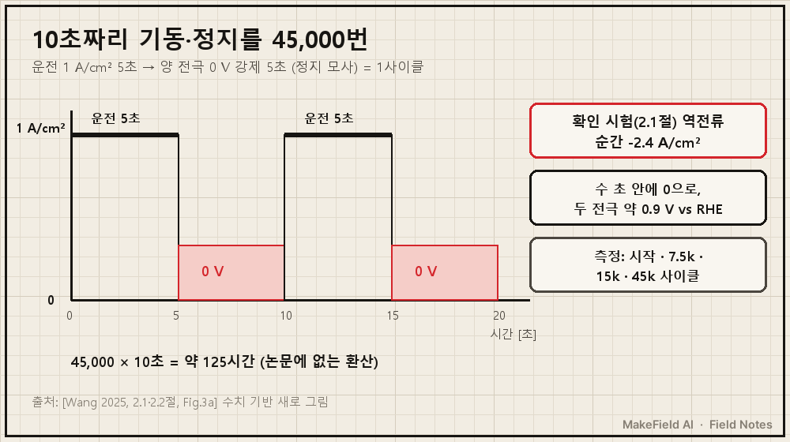
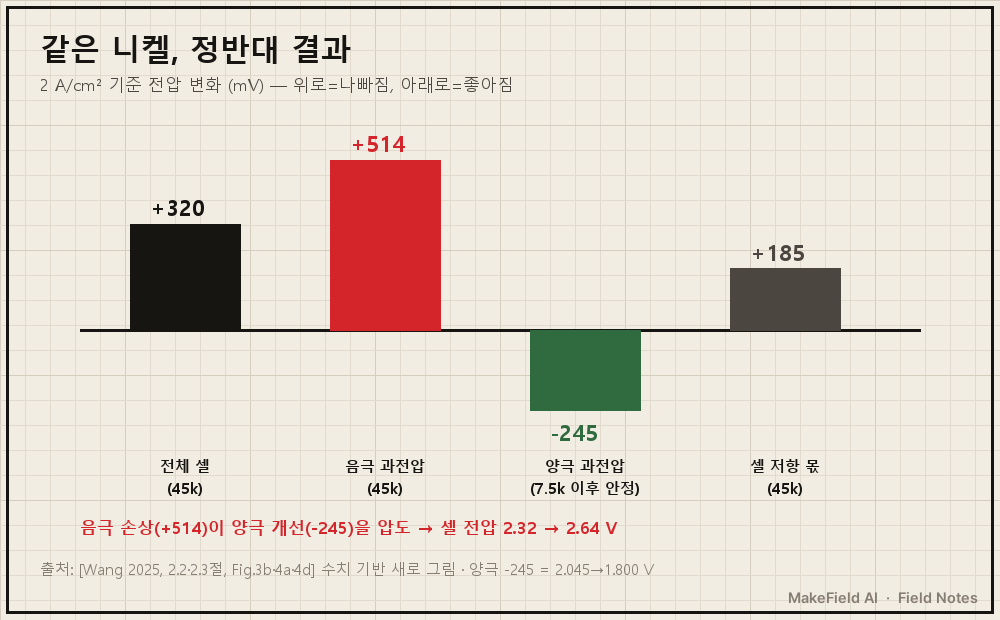
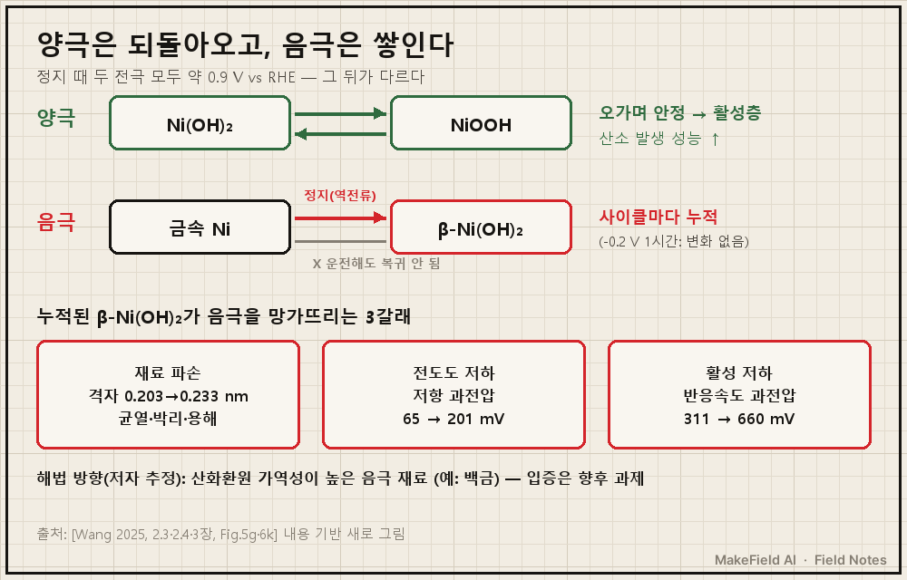
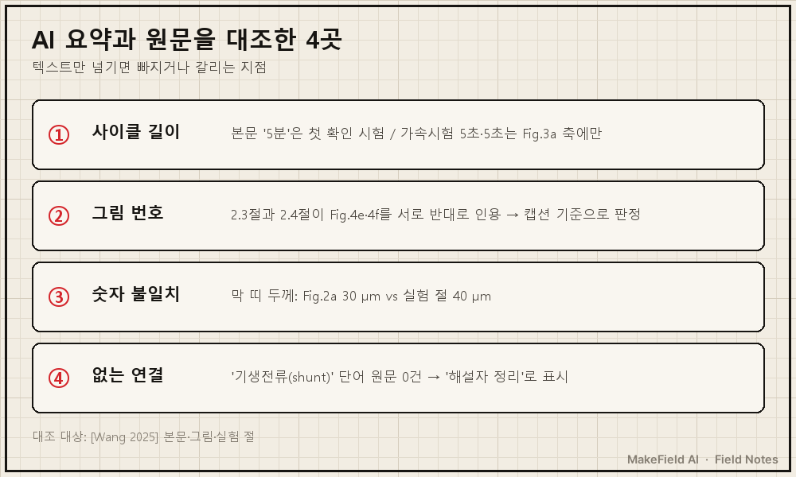

전원을 내렸는데 전류가 흐른다면 믿어지시나요. 알칼라인 수전해 스택은 정지하는 순간, 셀 사이에 남은 전위차 때문에 평소와 반대 방향으로 전류가 흐릅니다. 이걸 역전류(reverse current)라고 불러요.
알칼라인 수전해 역전류는 정지 순간 바이폴라판 양쪽 전극이 하나의 전지처럼 스스로 방전하며 생기고, 기동·정지 4만 5천 번을 흉내 낸 시험에서 니켈 음극의 과전압이 2 A/cm² 기준 514 mV 늘어났어요 [Wang 2025, 1장·Fig.4d].
'논문 읽는 AI' 16편, 4부 '닳는 것'의 세 번째 글입니다. 지난 편이 "변동 운전이 PEM을 얼마나 빨리 늙게 하나"였다면, 이번엔 알칼라인 쪽에서 껐다 켜는 행위 자체가 전극을 어떻게 바꾸는지 봅니다.
읽은 논문은 미국 로런스버클리 국립연구소(LBNL) Guanzhi Wang, Xiong Peng, Rangachary Mukundan 등 8명이 학술지 Advanced Energy Materials(2025, 15권 28호)에 낸 실험 논문이에요. CC BY 4.0으로 공개돼 있습니다 [Wang 2025].
1. 알칼라인 수전해는 왜 자주 꺼지나요
저부하에서 수소가 산소 쪽으로 넘어오는 기체 혼입이 안전 한계에 닿으면 장치를 멈춰야 해서, 변동 전원에 붙인 알칼라인 수전해는 기동·정지가 잦아집니다 [Wang 2025, 1장].
논문 서론이 짚는 인과 사슬은 이렇습니다.
- 수소 단가를 낮추려면 값싼 전기가 있을 때 돌리는 동적 운전이 필요해요 [Wang 2025, 1장]
- 그런데 정격의 25~45% 정도 저부하에선 양극과 음극 사이 기체 혼입(crossover) 때문에 순도·안전 문제가 생겨요 [Wang 2025, 1장]
- 양극 산소 속 수소가 2 vol%를 넘으면(폭발 하한의 약 50%) 보통 안전 정지를 합니다 [Wang 2025, 1장]
- 그 결과 기동·정지가 잦아지고, 이게 전극에 추가 스트레스를 줘 수명을 깎을 수 있다는 거예요 [Wang 2025, 1장]
용어부터 풀어 둘게요.
- 알칼라인 수전해(AWE): 진한 수산화칼륨(KOH) 수용액 속에서 물을 수소와 산소로 나누는 방식
- 음극(cathode): 수소가 나오는 쪽 전극. 이 논문에선 양쪽 모두 니켈 펠트(니켈 섬유를 엉켜 만든 판)를 썼어요 [Wang 2025, 2.1절]
- 과전압: 반응을 일으키는 데 이론값보다 더 들어가는 전압. 클수록 같은 수소에 전기가 더 들어요
2. 끈 순간 전류가 거꾸로 흐르는 이유 — 1부 기생전류와 같은 통로
알칼라인 수전해 역전류는, 바이폴라 스택에서 이웃한 셀의 양극과 음극이 금속판으로 전기적으로, 매니폴드의 전해액으로 이온적으로 동시에 이어져 있기 때문에 생겨요. 전원을 끊으면 그 둘이 하나의 전지가 되어 스스로 방전합니다 [Wang 2025, 1장·Fig.1].

대형 알칼라인 수전해는 대부분 얇은 셀 여러 장을 직렬로 쌓은 바이폴라형 스택이에요. 한 장의 바이폴라판 앞면은 이 셀의 음극, 뒷면은 다음 셀의 양극 역할을 합니다. 전해액은 매니폴드(공용 배관 통로)를 통해 각 셀로 공급되고요 [Wang 2025, 1장].
- 운전 중: 음극은 환원(수소 발생), 양극은 산화(산소 발생)
- 정지 직후: 바이폴라판 양쪽 전극 사이에 전위차가 남아 있어, 판 자체가 기전력을 가진 갈바닉 전지처럼 동작해요 [Wang 2025, 1장]
- 역전류: 두 전극 전위가 같아질 때까지 평소와 반대 방향으로 흐르고, 음극은 산화·양극은 환원되는 반대 반응이 일어납니다 [Wang 2025, 1장]
여기서 1부와 이어집니다. 1부에서 본 기생전류는 셀 사이 전해액 통로로 새는 전류였죠. 역전류도 이 논문 설명상 매니폴드 전해액을 통한 이온 연결이 있어야 흐를 수 있어요 [Wang 2025, 1장]. 운전 중엔 '새는 전류', 정지 땐 '거꾸로 흐르는 전류'로 같은 통로가 두 번 쓰이는 셈입니다. 다만 논문은 'shunt current(기생전류)'라는 단어를 쓰지 않았고, 이 연결은 해설자의 정리라는 점을 밝혀 둡니다.
논문에 따르면 실제 장치에선 정지 중 작은 보호 전류를 흘리는 보조 전원으로 막는 경우가 많은데, 저자들은 이게 주변 설비(BOP) 부담·운영비를 늘리고 앞서 말한 기체 혼합 우려도 있다고 적었어요 [Wang 2025, 1장].
3. 어떻게 시험했나요 — 10초짜리 기동·정지를 4만 5천 번
활성 면적 5 cm² 단일 셀에 기준전극을 붙여 양극과 음극 전위를 따로 재면서, 5초 운전·5초 정지를 4만 5천 번 반복했어요 [Wang 2025, 2.2절·Fig.3a].
기존 연구는 기준전극 없는 2전극 셀이라 "양극이 나빠졌는지, 음극이 나빠졌는지"를 가르기 어려웠다는 게 출발점이에요 [Wang 2025, 1장]. 그래서 연구진은 분리막 옆으로 음이온 교환막 띠를 빼내 외부의 Ag/AgCl 기준전극과 잇는 3전극 MEA 장치를 직접 만들었습니다 [Wang 2025, 2.1절·Fig.2a].
| 항목 | 조건 | 출처 |
|---|---|---|
| 셀 | 제로갭 단일 셀, 5 cm² | [Wang 2025, 2.2절·4장] |
| 전극 | 양극·음극 모두 니켈 펠트 | [Wang 2025, 2.1절] |
| 분리막 | Zirfon(UTP 500), 두께 0.15 cm | [Wang 2025, 2.1절] |
| 전해액 | 7 m KOH, 80 °C, 20 mL/min | [Wang 2025, 2.1절] |
| 운전 단계 | 1 A/cm² 정전류 5초 | [Wang 2025, Fig.3a] |
| 정지 단계 | 양 전극 사이 0 V 강제 5초 | [Wang 2025, Fig.3a] |
| 반복 | 총 45,000 사이클 | [Wang 2025, 2.2절] |

0 V를 거는 이유는 스택 정지 때 바이폴라판 양쪽 전극이 빠르게 같은 전위로 떨어지는 상황을 흉내 내기 위해서예요 [Wang 2025, 2.1절]. 가속시험에 앞서 5분 운전·5분 0 V로 돌린 확인 시험에서, 0 V를 걸자 순간 -2.4 A/cm²의 역방향 전류가 흐른 뒤 수 초 안에 0으로 줄었고, 두 전극 전위는 RHE 기준 약 0.9 V에서 만났습니다 [Wang 2025, 2.1절]. 0 V를 걸지 않고 그냥 두면 전위가 아주 천천히 풀리고 역전류도 잡히지 않았다고 해요 [Wang 2025, 2.1절].
참고로 사이클 1회가 10초이니 45,000회는 약 125시간입니다. 이건 논문에 없는 환산이에요.
4. 무엇을 알아냈나요 — 양극은 좋아지고, 음극은 무너졌다
같은 니켈인데 역전류에 대한 반응이 정반대였어요. 양극은 오히려 성능이 좋아졌고 음극은 계속 나빠졌으며, 음극의 손상이 양극의 개선을 압도해 전체 셀은 크게 열화했습니다 [Wang 2025, 2.3절].

| 대상 (2 A/cm² 기준) | 시험 전 | 시험 후 | 변화 | 출처 |
|---|---|---|---|---|
| 전체 셀 전압 | 2.32 V | 2.64 V (45k) | 약 +320 mV | [Wang 2025, Fig.3b] |
| 양극 전위 (vs RHE) | 2.045 V | 1.800 V (7.5k, 이후 안정) | 약 -250 mV | [Wang 2025, Fig.4a] |
| 음극 전위 (vs RHE) | -0.280 V | -0.794 V (45k) | +514 mV 과전압 | [Wang 2025, Fig.4d] |
| 셀 저항(HFR) 몫 | — | — | 약 +185 mV | [Wang 2025, 2.2절·Fig.3c] |
전체 셀만 보면 7.5k 사이클 뒤 +100 mV, 15k 뒤 +180 mV, 45k 뒤 300 mV 넘게 올랐어요 [Wang 2025, 2.2절]. 3전극 장치로 쪼개 보니 내막은 이렇습니다.
- 양극: 처음 7.5k 사이클 동안 과전압이 약 250 mV 줄고, 이후 37.5k 사이클은 안정. 반응 속도(kinetic) 과전압이 420 → 220 mV로 줄었고 타펠 기울기도 102 → 66 mV/dec로 낮아졌어요 [Wang 2025, 2.3절]
- 음극: 첫 7.5k 사이클에서 이미 344 mV 악화, 끝까지 계속 나빠져 514 mV. 반응 속도 과전압 약 350 mV 증가(0.311 → 0.660 V), 저항 과전압도 65 → 201 mV로 꾸준히 증가했어요 [Wang 2025, 2.3절]
5. 음극 니켈은 왜 되돌아오지 못하나요
정지 때 음극 니켈 표면이 β-수산화니켈(β-Ni(OH)₂)로 산화되는데, 다시 운전해도 금속 니켈로 완전히 환원되지 않아 사이클마다 쌓이기 때문이에요 [Wang 2025, 2.4절·Fig.6k].

| 구분 | 양극 | 음극 |
|---|---|---|
| 정지 때 전위 | 약 0.9 V vs RHE로 내려감 | 약 0.9 V vs RHE로 올라감 |
| 생기는 물질 | Ni(OH)₂ ↔ NiOOH 오감 | 금속 Ni → β-Ni(OH)₂ |
| 되돌아오나 | 비교적 가역적 | 비가역, 계속 쌓임 |
| 결과 | 산소 발생에 유리한 활성층 → 성능 향상 | 용해·균열·저항 증가·활성 저하 |
출처: [Wang 2025, 2.4절·Fig.5g·Fig.6k]
논문이 든 비가역성의 이유는 두 가지예요 [Wang 2025, 2.4절].
- 열역학 장벽: 층상 구조의 β-Ni(OH)₂를 금속 니켈의 면심입방 구조로 바꾸려면 Ni-O 결합을 전부 끊고 구조를 통째로 재배열해야 해요
- 속도 장벽: β-Ni(OH)₂ → Ni 환원은 전자 2개가 오가는 다전자 반응이라, 양극의 1전자 반응(NiOOH → Ni(OH)₂)보다 굼뜹니다
연구진은 이 가설을 직접 확인했어요. 시험 끝난 음극을 -0.2 V vs RHE에 3,600초 걸어도 조성이 그대로였고, -0.5 V로 3,600초를 걸어서야 β-Ni(OH)₂가 약 10%(76.9 → 70.2 at%) 줄었다고 해요 [Wang 2025, 2.4절]. 실제 스택에선 전력 장치 한계로 이렇게 깊은 환원 전위를 거는 것 자체가 어렵다고 덧붙였습니다 [Wang 2025, 2.4절].
쌓인 β-Ni(OH)₂가 음극을 망가뜨리는 경로는 세 갈래로 정리돼요 [Wang 2025, 2.4절].
- 재료 파손: 니켈(0.203 nm)과 β-Ni(OH)₂(0.233 nm)의 격자 간격 차이로 반복 팽창 스트레스가 생겨 균열·박리·용해/재석출이 나타났어요. 벌어진 틈엔 기포가 갇힐 수 있다고 합니다
- 전도도 저하: β-Ni(OH)₂는 금속 니켈보다 전기가 잘 안 통해, 저항 과전압이 계속 늘어나는 원인이 돼요
- 활성 저하: 수소 발생 촉매 활성이 금속 니켈보다 훨씬 낮아요. 비커 시험에서 시험 후 음극의 타펠 기울기는 516 mV/dec로, 새 음극 112 mV/dec의 4배를 넘었습니다 [Wang 2025, 2.3절]
해법 방향은 결론에 한 줄로 나와요. 금속 ↔ 산화물·수산화물 사이를 잘 되돌아오는(산화환원 가역성이 높은) 음극 재료, 예컨대 백금 같은 소재가 동적 운전 내구성을 높일 수 있다는 것. 다만 저자 스스로 "추정(speculated)"이며 입증은 향후 과제라고 적었어요 [Wang 2025, 3장].
이 논문의 한계도 짚어 둘게요.
- 단일 셀 하나: 5 cm² 셀, 니켈 펠트 한 종류, 80 °C 조건의 결과예요 [Wang 2025, 4장]. 조건별 반복 시험 수는 본문에 없습니다.
- 역전류 크기가 과장됐을 수 있다: 단일 셀은 분리막을 지나는 전해액 저항이 스택 매니폴드보다 훨씬 작아, 유도된 역전류가 실제 스택보다 클 가능성이 높다고 저자가 직접 밝혔어요 [Wang 2025, 2.1절].
- 정지를 0 V 강제로 흉내 냈다: 실제 스택의 자연 방전이 아니라 전위를 강제로 맞춘 모사예요 [Wang 2025, 2.2절].
- 해법은 미검증: 가역성 높은 음극이 효과가 있는지는 이 논문에서 시험하지 않았습니다 [Wang 2025, 3장].
6. 이 논문을 AI로 읽으며 원문과 대조한 네 곳
이번 논문은 숫자보다 그림과 본문의 연결에서 함정이 나왔어요. PDF를 텍스트로 뽑아 AI에게 넘긴 뒤, 아래 네 곳을 원문 페이지와 맞췄습니다.

① 사이클 길이는 본문 텍스트에 없었다. "운전 5분·정지 5분"이라는 숫자가 2.1절에 나오는데, 이건 역전류를 처음 확인한 시험이에요. 4만 5천 번 돌린 가속시험의 5초·5초는 Fig.3a 그림의 가로축에만 있습니다. 텍스트만 넘기면 AI는 5분을 가속시험 조건으로 착각하기 딱 좋아요. 그래서 그 쪽을 이미지로 열어 축 눈금을 직접 읽었습니다.
[텍스트] 2.1절: constant current for 5 min ... 0 V ... for 5 min
[그림] Fig.3a: 1 A cm-2 (0~5 s) → 0 V (5~10 s) → cycle 2 ...② 같은 논문 안에서 그림 번호가 뒤바뀐다. 2.3절은 음극 반응 속도 과전압을 Fig.4e, 저항 과전압을 Fig.4f로 가리키는데, 2.4절은 저항 증가를 Fig.4e, 활성 저하를 Fig.4f로 적었어요. 그림 캡션(e=반응 속도, f=저항)과 맞는 건 2.3절입니다. AI에게 "4e가 뭘 보여 줘?"라고 물으면 어느 문단을 근거로 삼느냐에 따라 답이 갈릴 수 있어요.
③ 그림과 실험 절의 숫자가 다르다. 기준전극을 잇는 음이온 교환막 띠 두께가 Fig.2a엔 30 µm, 실험 절(4장)엔 40 µm예요. 결론과 무관해 이 글에선 뺐습니다.
④ 논문에 없는 연결은 표시한다. "1부 기생전류와 같은 통로"는 이 시리즈의 맥락이지 논문의 주장이 아니에요. AI에게 "이 논문이 shunt current를 언급하나?"를 따로 묻고, 추출 텍스트 전체를 검색해 0건임을 확인한 뒤, 본문에 '해설자의 정리'라고 적었습니다.
자기 분야 실험 논문에 그대로 붙여 쓸 수 있는 지시문입니다.
1) 시험 조건(시간·전류·횟수)이 본문에만 있는지, 그림 축에만 있는지 출처 위치를 같이 적어.
본문에 없으면 "그림에서만 확인 가능"이라고 표시해.
2) 같은 그림 번호(예: Fig.4e)를 가리키는 문장을 전부 모아, 캡션 설명과 일치하는지 대조해.
3) 같은 물리량이 그림·본문·실험 절에서 다르게 적힌 곳을 목록으로 만들어.
4) 내가 붙이려는 해석(다른 논문·다른 개념과의 연결)이 원문에 실제로 있는지 검색하고,
없으면 "원문에 없음"이라고 답해.
5) 저자가 speculate/likely/possibly로 쓴 설명은 '추정'으로 따로 분류해.7. 자주 묻는 질문
Q. 알칼라인 수전해 역전류는 왜 생기나요?
바이폴라 스택에서 이웃 셀의 양극과 음극이 금속판과 매니폴드 전해액으로 동시에 연결돼 있어, 전원을 끊으면 그 사이 전위차로 스스로 방전하기 때문이에요 [Wang 2025, 1장]. 두 전극 전위가 같아질 때까지 평소와 반대 방향으로 흐릅니다.
Q. 역전류는 양극과 음극 중 어디를 더 망가뜨리나요?
이 논문의 니켈 전극 시험에선 음극이에요. 45k 사이클 뒤 2 A/cm² 기준 음극 과전압은 514 mV 늘었고, 양극은 오히려 약 250 mV 좋아졌어요 [Wang 2025, 2.3절]. 음극 손상이 더 커서 전체 셀 전압은 2.32 → 2.64 V로 올랐습니다 [Wang 2025, Fig.3b].
Q. 다시 운전하면 음극이 회복되지 않나요?
β-Ni(OH)₂는 금속 니켈로 잘 돌아오지 않아요. -0.2 V vs RHE에서 1시간을 걸어도 그대로였고, -0.5 V에서 1시간을 걸어야 약 10% 줄었다고 합니다 [Wang 2025, 2.4절].
정리하면, 알칼라인 수전해에서 꺼지는 순간은 쉬는 시간이 아니었어요. 역전류가 음극 니켈을 β-수산화니켈로 바꾸고, 그게 되돌아오지 않은 채 쌓이면서 저항과 반응 속도가 함께 나빠졌습니다. 자주 껐다 켜야 하는 재생에너지 연계에서 음극 재료가 왜 숙제인지가 여기서 드러나요.
다음 편은 수만 시간짜리 수명을 짧게 평가하는 방법, 가속열화시험 절차의 뼈대를 읽습니다. 이번 편의 45k 사이클이 그 축소판이었던 셈이죠.
여러분이 AI로 읽은 논문에서도, 본문과 그림이 서로 다른 말을 하던 곳이 있었나요?
논문을 AI로 읽을 때 쓰는 그림·본문 대조 지시문은 makefield.ai에 정리해 두고 있어요.
원문: https://doi.org/10.1002/aenm.202500886 (CC BY 4.0)